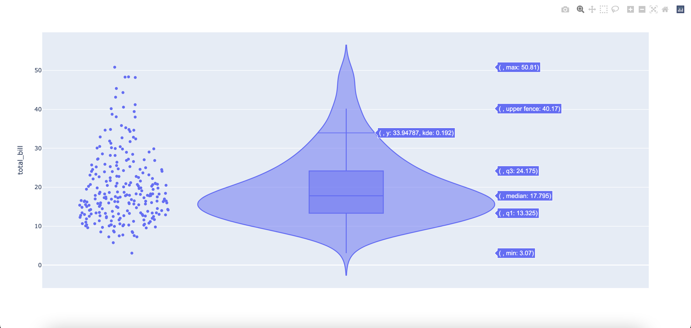

Get Started
Line Graphs
Bar Graphs
Histograms
Scatter Plots
Pie Charts
Violin Plots
Box Plots
A violin plot combines a box plot and a kernel density plot. We can easily calculate the median of the data using this plot.
Let us start plotting a violin plot in Python by importing plotly.
Let us first import a data frame from plotly. This data frame shows the tip received by different employees.
Let us plot the graph.
Here, we feed the data frame name to the function. Next, we will mention that the y-axis represents the total_bill variable. The box=True command makes the box plot visible. All points in the data frame are shown by points="all".
Your graph should like somewhat like this.